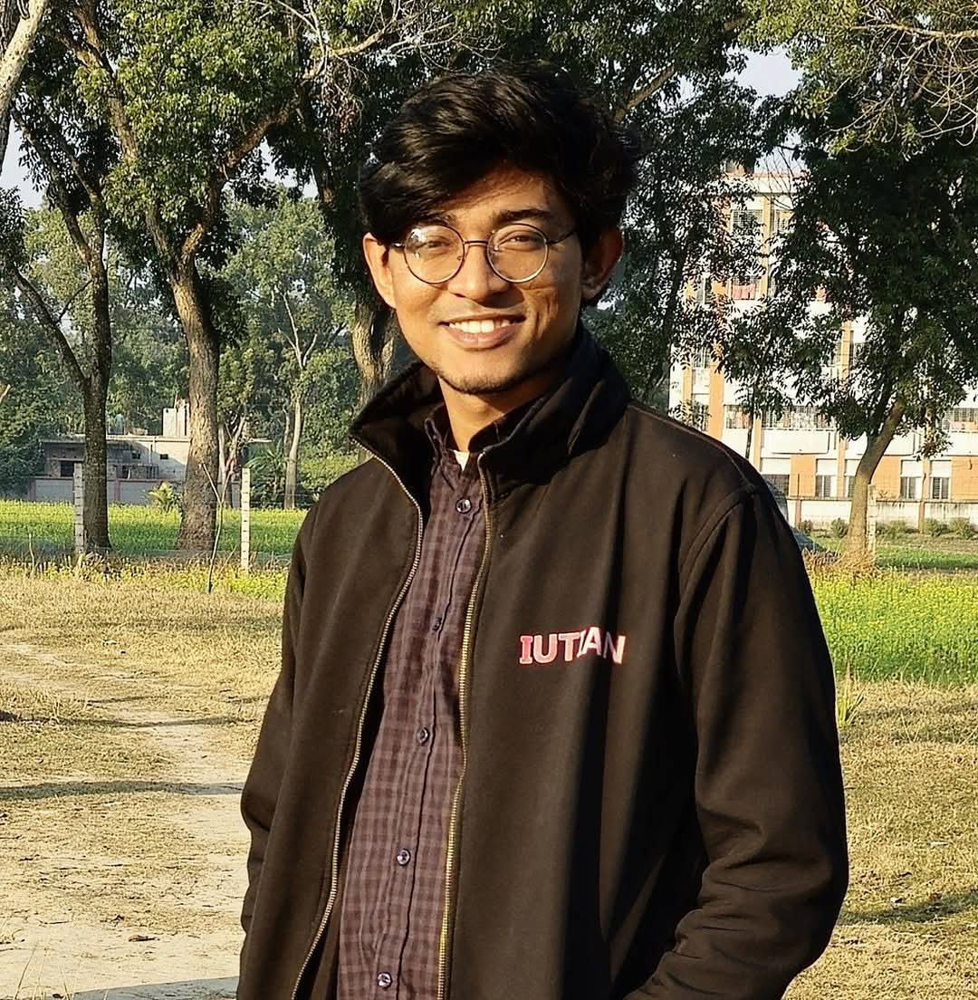

Junior Lecturer, Computer Science & Engineering
Sep 2024 – Present
Islamic University of Technology · Gazipur, Bangladesh
My work centers on language technology for people the field tends to under-serve: speakers of low-resource languages, users of low-resource sign languages, and readers exposed to harmful or misleading text in languages that benchmarks rarely cover.
I work within the Systems and Software Lab (SSL) in the Department of Computer Science and Engineering at the Islamic University of Technology. The people below are the mentors and collaborators I have written papers with.

Md. TariquzzamanJunior Lecturer · M.Sc. studentBangla is spoken by over 230 million people and still lacks the clean, labelled, in-domain data that modern methods assume. I build the pieces that close that gap: embeddings trained on the informal Bangla people actually write, and augmentation that stretches small datasets further.
Two sides of the same problem: text that incites harm, and text that misleads. Both are studied mostly in English, and both behave differently once you leave it.
Sign languages are low-resource twice over: little data, and little attention. My work here targets instruction generation, so that learners of Bangla Sign Language get usable written guidance for producing a sign.
Benchmarks decide what the field optimizes for. I am interested in benchmarks that hold the claim fixed and vary the context around it, because that is where model judgment quietly breaks.